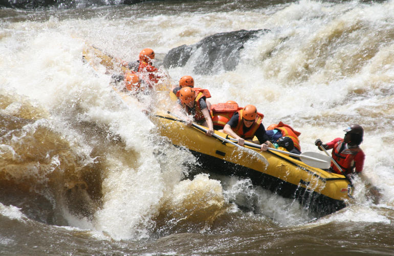
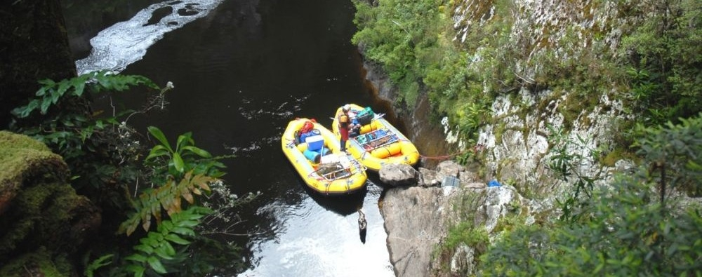

Explore The World With Us
Let Enjoy the Beauty of Nature

Previouse Trips
The Zambezi River is a natural wonder, stretching for the fourth-longest distance in Africa before it finally meets the Indian Ocean. This majestic river serves as a natural boundary between Zambia and Zimbabwe, boasting the awe-inspiring Victoria Falls and Batoka Gorge along its path. The Zambezi River is home to diverse wildlife and protected areas, such as the Lower Zambezi National Park and Mana Pools National Park. Commercial rafting has been a popular activity on the Zambezi River for almost four decades, making it a must-see destination for most tourists.
 white-water-rafting-in-victoria-fallsThe North Johnstone River in Australia is known to be one of the most thrilling white-water experiences and boasts one of the longest runs in the region. This river flows through a canyon surrounded by dense rainforest, waterfalls, dark basalt cliffs, and exotic wildlife. Its source is found about 450 miles above in the World Heritage rainforests of Palmerston National Park. Rafting trips usually commence from an old converted dairy farm located at Mulgalli Falls, which is a two-hour drive from Cairns. From there, the rafters and equipment are helicoptered into the heart of the rainforest to start their 4 to 6-day journey.
Discover the ultimate whitewater rafting experience in Utah - a land of natural marvels and home to one of the world's most stunning adventure destinations: Moab. Tucked between the awe-inspiring red rock formations of Canyonlands National Park and Arches National Park and surrounded by the majestic peaks of the La Sal Mountains, Moab offers a dramatic setting for your next adventure. And when it comes to river rafting, Utah's Colorado River near Moab is a top contender. From the rugged beauty of Desolation Canyon to the exhilarating rapids of Westwater Canyon and Cataract Canyon, this desert landscape boasts some of the most diverse and breathtaking river rafting experiences on the planet